Basic visualization functions#
The basic visualization functions are useful for data inspection and presentation. They include functions for plotting data distributions, heatmaps, and scatter plots.
Autoprot Basic Plotting Functions.
@author: Wignand, Julian, Johannes
@documentation: Julian
- autoprot.visualization.basic.boxplot(df: DataFrame, reps: list, title: str | list[str] | None = None, labels: list | None = None, compare: bool = False, ylabel: str = 'log_fc', file: None | str = None, ret_fig: bool = False, figsize: tuple = (15, 5), ax: Axes | None = None, **kwargs: object) Figure | None[source]#
Plot intensity boxplots.
- Parameters:
ax (plt.axis) – Axis to plot on, optional.
df (pd.Dataframe) – INput dataframe.
reps (list) – Colnames of replicates.
title (str or list of str, optional) – Title(s) of the plot. List of two if compare is True. The default is None.
labels (list of str, optional) – List with labels for the axis. The default is [].
compare (bool, optional) – If False reps is expected to be a single list, if True two list are expected (e.g. normalized and non-normalized Ratios). The default is False.
ylabel (str, optional) – Either “log_fc” or “Intensity”. The default is “log_fc”.
file (str, optional) – Path to a folder where the figure should be saved. The default is None.
ret_fig (bool, optional) – Whether to return the figure object. The default is False.
figsize (tuple of int, optional) – Figure size. The default is (15,5).
**kwargs – Passed to pandas boxplot.
- Raises:
ValueError – If the reps input does not match the compare setting.
- Returns:
fig – Plot figure object.
- Return type:
plt.figure
Examples
To inspect unnormalised data, you can generate a boxplot comparing the fold-change differences between conditions or replicates
prot = pp.read_csv("../data/proteinGroups_minimal.zip") prot = pp.cleaning(prot, "proteinGroups") protRatio = prot.filter(regex="Ratio .\/. BC.*_1").columns prot = pp.log(prot, protRatio, base=2) protRatio = prot.filter(regex="log2_Ratio.*").columns prot = pp.vsn(prot, protRatio) protRatio = prot.filter(regex="log2_Ratio.*_1$").columns labels = [i.split(" ")[1]+"_"+i.split(" ")[-1] for i in protRatio] vis.boxplot(df=prot,reps=protRatio, compare=False, labels=labels, title="Unnormalized Ratios Boxplot", ylabel="log_fc") plt.show()
(
Source code,png,hires.png,pdf)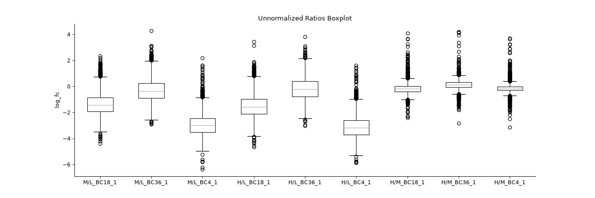
If you have two datasets for comparison (e.g. normalised and non-normalised) fold-changes, you can use boxplot to plot them side-by-side.
protRatioNorm = prot.filter(regex="log2_Ratio.*normalized").columns vis.boxplot(prot,[protRatio, protRatioNorm], compare=True, labels=[labels, labels], title=["unormalized", "normalized"], ylabel="log_fc")
(
Source code,png,hires.png,pdf)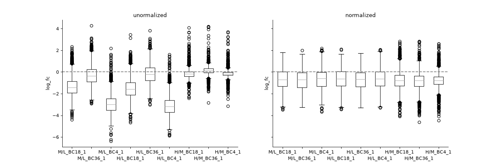
{kind=link}
{kind=link}
{kind=link}
{kind=link}
- autoprot.visualization.basic.corr_map(df, columns, cluster=False, annot=None, cmap='YlGn', figsize=(7, 7), save_dir=None, save_type='pdf', save_name='pairPlot', ax=None, **kwargs)[source]#
Plot correlation heat- and clustermaps.
- Parameters:
df (pd.df) – Dataframe from MaxQuant file.
columns (list of strings, optional) – The columns to be visualized. The default is None.
cluster (bool, optional) – Whether to plot a clustermap. If True, only a clustermap will be returned. The default is False.
annot (bool or rectangular dataset, optional) – If True, write the data value in each cell. If an array-like with the same shape as data, then use this to annotate the heatmap instead of the data. Note that DataFrames will match on position, not index. The default is None.
cmap (matplotlib colormap name or object, or list of colors, optional) – The mapping from data values to color space. The default is “YlGn”.
figsize (tuple of int, optional) – Size of the figure. The default is (7,7).
save_dir (str, optional) – Where the plots are saved. The default is None.
save_type (str, optional) – What format the saved plots have (pdf, png). The default is “pdf”.
save_name (str, optional) – The name of the saved file. The default is “pairPlot”.
ax (plt.axis, optional) – The axis to plot. The default is None.
**kwargs – passed to seaborn.heatmap and seaborn.clustermap.
- Return type:
None.
Examples
To plot a heatmap with annotated values call corrMap directly:
prot = pp.read_csv("../data/proteinGroups_minimal.zip") mildInt = ["Intensity M BC18_1","Intensity H BC18_2","Intensity M BC18_3", "Intensity M BC36_1","Intensity M BC36_2","Intensity H BC36_2"] prot = pp.log(prot, mildInt, base=10) mildLogInt = [f"log10_{i}" for i in mildInt] vis.corr_map(prot,mildLogInt, annot=True) plt.show()
(
Source code,png,hires.png,pdf)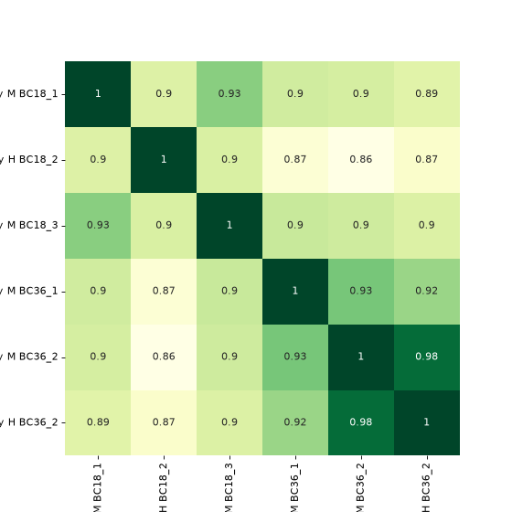
If you want to plot the clustermap, set cluster to True. The correlation coefficients are colour-coded.
vis.corr_map(prot, mildLogInt, cmap="autumn", annot=None, cluster=True) plt.show()
(
Source code,png,hires.png,pdf)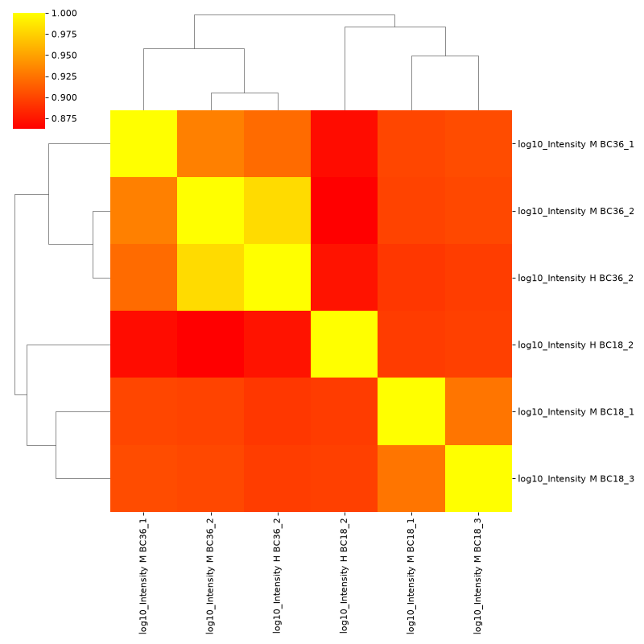
{kind=link}
{kind=link}
{kind=link}
{kind=link}
- autoprot.visualization.basic.correlogram(df: DataFrame, columns: list[str] | Index = None, file: str = 'proteinGroups', log: bool = True, save_dir: str | None = None, save_type: str = 'pdf', save_name: str = 'pairPlot', lower_triang: Literal['scatter', 'hexBin', 'hist2d'] = 'scatter', sample_frac: float | None = None, bins: int = 100, ret_fig: bool = False, correlation_colorrange: tuple[float, float] = (0.8, 1), figsize: bool | tuple = None, to_count: str = 'proteins')[source]#
Plot a pair plot of the dataframe intensity columns in order to assess the reproducibility.
Notes
The lower half of the correlogram shows a scatter plot comparing pairs of conditions while the upper part shows you the color coded correlation coefficients as well as the intersection of hits between both conditions. In tiles corresponding to self-comparison (the same value on y and x-axis) a histogram of intensities is plotted.
- Parameters:
df (pd.DataFrame) – Dataframe from MaxQuant file.
columns (list of strings, optional) – The columns to be visualized. The default is empty list.
file (str, optional) – “proteinGroups” or “Phospho(STY)” (does only change annotation). The default is “proteinGroups”.
log (bool, optional) – Whether provided intensities are already log transformed. The default is True.
save_dir (str, optional) – Where the plots are saved. The default is None.
save_type (str, optional) – What format the saved plots have (pdf, png). The default is “pdf”.
save_name (str, optional) – The name of the saved file. The default is “pairPlot”.
lower_triang ("scatter", "hexBin" or "hist2d", optional) – The kind of plot displayed in the lower triang. The default is “scatter”.
sample_frac (float, optional) – Fraction between 0 and 1 to indicate fraction of entries to be shown in scatter. Might be useful for large correlograms in order to make it possible to work with those in illustrator. The default is None.
bins (int, optional) – Number of bins for histograms. The default is 100.
ret_fig (bool, optional) – Wether to return the seaborn figure object
correlation_colorrange (tuple, optional) – Sets the colormap range for the upper-right correlation tiles. Default is (0.8, 1)
figsize (tuple, optional) – The figure size in x and y direction.
to_count (str) – Label for the number of elements counted (depends on the input file)
- Raises:
ValueError – If provided list of columns is not suitable.
- Return type:
None.
Examples
You may for example plot the protein intensitites of a single condition of your experiment .
twitchInt = ['Intensity H BC18_1','Intensity M BC18_2','Intensity H BC18_3', 'Intensity H BC36_1','Intensity H BC36_2','Intensity M BC36_3'] ctrlInt = ["Intensity L BC18_1","Intensity L BC18_2","Intensity L BC18_3", "Intensity L BC36_1", "Intensity L BC36_2","Intensity L BC36_3"] mildInt = ["Intensity M BC18_1","Intensity H BC18_2","Intensity M BC18_3", "Intensity M BC36_1","Intensity M BC36_2","Intensity H BC36_3"] prot = pp.read_csv("../data/proteinGroups_minimal.zip") prot = pp.log(prot, twitchInt+ctrlInt+mildInt, base=10) twitchLogInt = [f"log10_{i}" for i in twitchInt] mildLogInt = [f"log10_{i}" for i in mildInt] vis.correlogram(prot,mildLogInt, file='proteinGroups', lower_triang="hist2d") plt.show()
(
Source code,png,hires.png,pdf)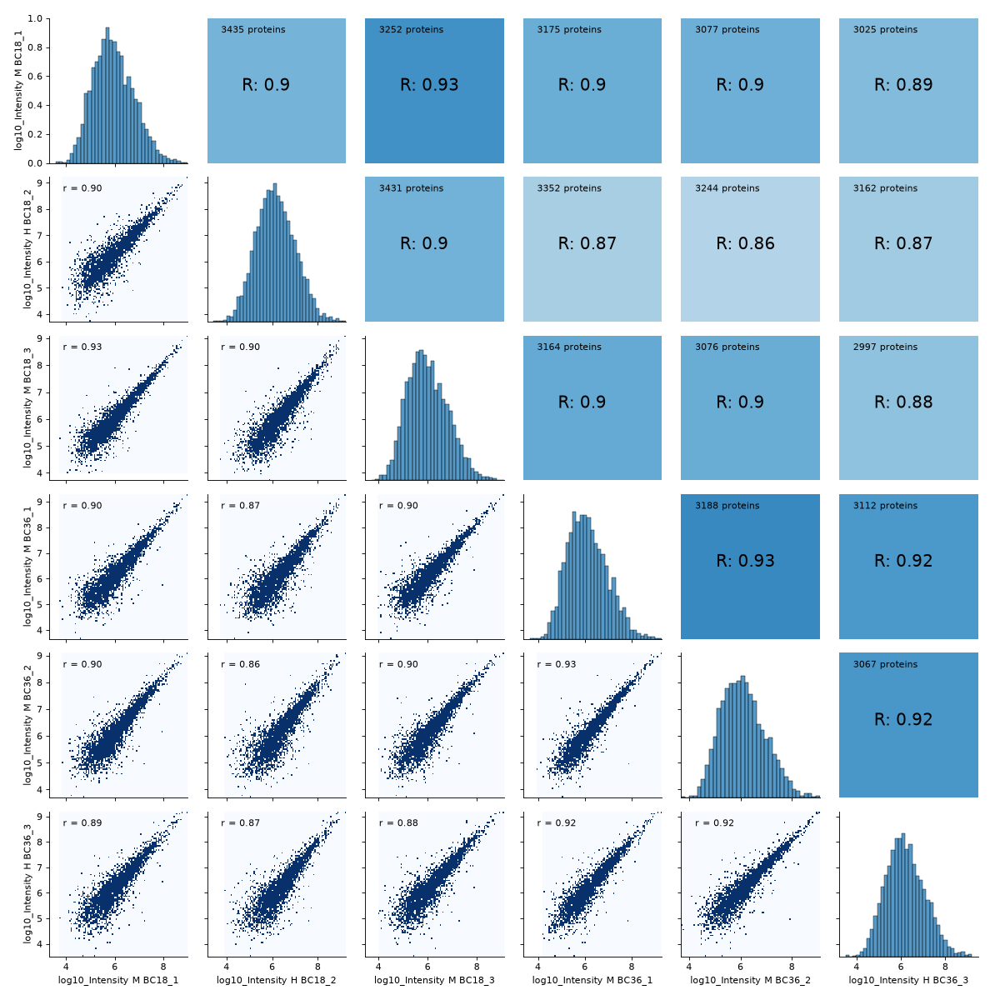
You may want to change the plot type on the lower left triangle.
vis.correlogram(prot,mildLogInt, file='proteinGroups', lower_triang="hexBin") plt.show()
(
Source code,png,hires.png,pdf)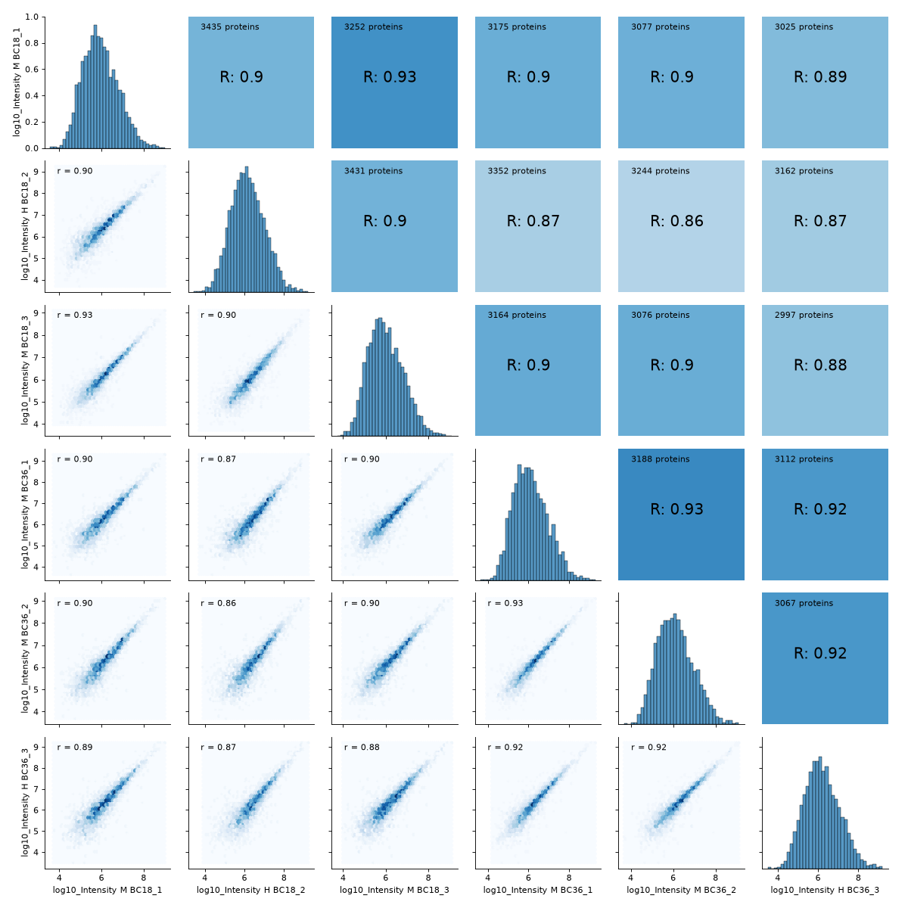
{kind=link}
{kind=link}
{kind=link}
{kind=link}
- autoprot.visualization.basic.ima_plot(df, x, y, fct=None, title='MA Plot', annot=None)[source]#
Plot log intensity ratios (M) vs. the average intensity (A).
Notes
The MA plot is useful to determine whether a data normalization is needed. The majority of proteins is considered to be unchanged between treatments and therefore should lie on the y=0 line. If this is not the case, a normalization should be applied.
- Parameters:
df (pd.dataFrame) – Input dataframe with log intensities.
x (str) – Column name containing intensities of experiment1.
y (str) – Column name containing intensities of experiment2.
fct (numeric, optional) – The value in M to draw a horizontal line. The default is None.
title (str, optional) – Title of the figure. The default is “MA Plot”.
annot (str, optional) – Column name to use for labels in interactive plot. The default is None.
- Return type:
None.
- autoprot.visualization.basic.intensity_rank(data: DataFrame, rank_col: str = 'log10_Intensity', annotate_colname: str | None = None, annotate: Literal['highlight'] | None = None, n: int | None = 5, title: str = 'Rank Plot', figsize: tuple[int, int] = (15, 7), save_to_folder: str | None = None, hline: float | None = None, ax: Axes | None = None, highlight: list[Index] | Index | None = None, kwargs_highlight: list[dict] | dict | None = None, ascending: bool = True, annotate_density: int = 100, **kwargs) None[source]#
Draw a rank plot.
- Parameters:
data (pd.DataFrame) – Input dataframe.
rank_col (str, optional) – the column with the values to be ranked (e.g. Intensity values). The default is “log10_Intensity”.
annotate_colname (str, optional) – Colname of the column with the labels. The default is None.
annotate (str, optional) – Whether to annotate the plot. Can be “highlight” or None. The default is None.
n (int, optional) – How many points to label on the top and bottom of the y-scale. The default is 5.
title (str, optional) – The title of the plot. The default is “Rank Plot”.
figsize (tuple of int, optional) – The figure size. The default is (15,7).
save_to_folder (str, optional) – Path to a folder where the resulting figure should be saved. The default is None.
hline (numeric, optional) – y value to place a horizontal line. The default is None.
ax (matplotlib.axis) – Axis to plot on
highlight (pd.Index or list of pd.Index, optional) – Index of the data to highlight. The default is None.
kwargs_highlight (dict or list of dict, optional) – Keyword arguments to be passed to the highlight plot. If list, must be the same length as highlight.
ascending (bool, optional) – Whether to sort the data in ascending order.
annotate_density (int, optional) – Number of points to consider for density-based annotation. The default is 100.
**kwargs – Passed to seaborn.scatterplot.
- Return type:
None.
Examples
Annotate a protein groups datafile with the proteins of highest and lowest intensity. The 15 most and least intense proteins will be labelled. Note that marker is passed to seaborn and results in points marked as diamonds.
data = pp.log(prot,["Intensity"], base=10) data = data[["log10_Intensity", "Gene names"]] data = data[data["log10_Intensity"]!=-np.inf] vis.intensity_rank(data, rank_col="log10_Intensity", label="Gene names", n=15, title="Rank Plot", hline=8, marker="d")
(
Source code,png,hires.png,pdf)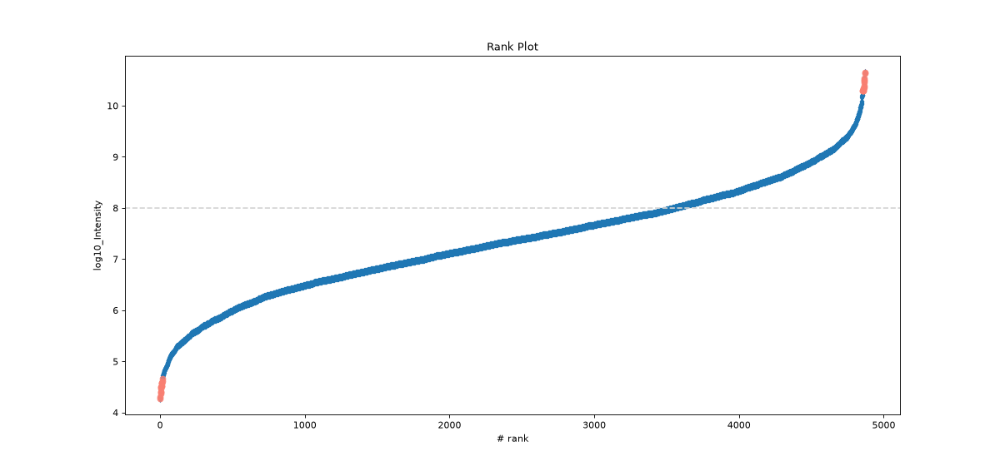
{kind=link}
{kind=link}
- autoprot.visualization.basic.ivolcano(df: DataFrame, log_fc_colname: str, p_colname: str = None, score_colname: str = None, p_thresh: float | None = 0.05, log_fc_thresh: float | None = None, annotate_colname: str = None, pointsize_colname: str | float = None, highlight: Index = None, title: str = 'Volcano Plot', show_legend: bool = True, ret_fig: bool = True)[source]#
Return interactive volcano plot.
- Parameters:
df (pd.DataFrame) – Dataframe containing the data to plot.
log_fc_colname (str) – column of the dataframe with the log fold change.
p_colname (str, optional) – column of the dataframe containing p values (provide score_colname or p_colname). The default is None.
score_colname (str, optional) – column of the dataframe containing -log10(p values) (provide score or p). The default is None.
p_thresh (float or None, optional) – p-value threshold under which an entry is deemed significantly regulated. The default is 0.05.
log_fc_thresh (float or None, optional) – fold change threshold at which an entry is deemed significant regulated. The default is None
annotate_colname (str, optional) – Colname to use for labels in interactive plot. The default is None.
pointsize_colname (str or float, optional) – Name of a column to use as measure for point size. Alternatively the size of all points.
highlight (pd.Index, optional) – Rows to highlight in the plot. The default is None.
title (str, optional) – Title for the plot. The default is “Volcano Plot”.
show_legend (bool, optional) – Whether to plot a legend. The default is True.
ret_fig (bool, optional) – Whether to return the figure, can be used to further customize it afterward. The default is False.
- Returns:
The figure object.
- Return type:
plotly.figure
- autoprot.visualization.basic.log_int_plot(df, log_fc, log_intens_col, fct=None, annot=False, sig_col='green', bg_col='lightgray', title='LogFC Intensity Plot', figsize=(6, 6), ax: Axes = None, ret_fig: bool = False, legend: bool = True, **kwargs)[source]#
Draw a log-foldchange vs log-intensity plot.
Notes
Deprecated, use ratio_vs_intens instead.
- autoprot.visualization.basic.ma_plot(df: DataFrame, x: str, y: str, fct: float | int = None, title: str = 'MA Plot', ax: Axes = None, ret_fig: bool = False, figsize: tuple = (6, 6))[source]#
Plot log intensity ratios (M) vs. the average intensity (A).
Notes
The MA plot is useful to determine whether a data normalization is needed. The majority of proteins is considered to be unchanged between treatments and thereofore should lie on the y=0 line. If this is not the case, a normalization should be applied.
- Parameters:
ret_fig (bool) – Whether to return the figure or show it directly
ax (plt.axis) – The axis to plot on
df (pd.dataFrame) – Input dataframe with log intensities.
x (str) – Colname containing intensities of experiment1.
y (str) – Colname containing intensities of experiment2.
fct (numeric, optional) – The value in M to draw a horizontal line. The default is None.
title (str, optional) – Title of the figure. The default is “MA Plot”.
figsize (tuple of int, optional) – Size of the figure. The default is (6,6).
- Return type:
None.
Examples
The MA plot allows to easily visualize difference in intensities between experiments or replicates and therefore to judge if data normalization is required for further analysis. The majority of intensities should be unchanged between conditions and therefore most points should lie on the y=0 line.
prot = pp.read_csv("../data/proteinGroups_minimal.zip") prot = pp.cleaning(prot, "proteinGroups") protInt = prot.filter(regex='Intensity').columns prot = pp.log(prot, protInt, base=10) x = "log10_Intensity BC4_3" y = "log10_Intensity BC36_1" vis.ma_plot(prot, x, y, fct=2) plt.show()
(
Source code,png,hires.png,pdf)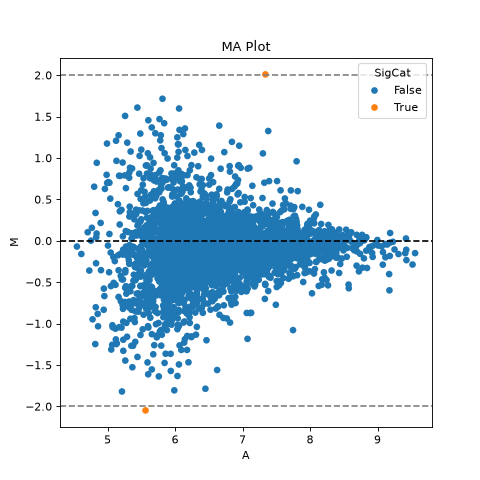
If this is not the case, a normalization using e.g. LOESS should be applied
twitch = "log10_Intensity H BC18_1" ctrl = "log10_Intensity L BC18_1" vis.ma_plot(prot, twitch, ctrl, fct=2) plt.show()
(
Source code,png,hires.png,pdf)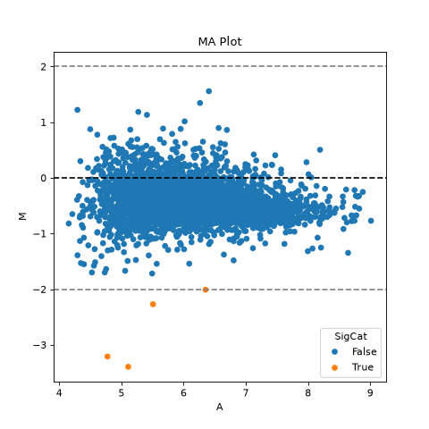
{kind=link}
{kind=link}
{kind=link}
{kind=link}
- autoprot.visualization.basic.mean_sd_plot(df, reps)[source]#
Rank vs. standard deviation plot.
- Parameters:
df (pd.DataFrame) – Input dataframe.
reps (list of str) – Column names over which to calculate standard deviations and rank.
- Return type:
None.
Examples
Visualise the intensity distirbutions of proteins depending on their total indensity.
prot = pp.read_csv("../data/proteinGroups_minimal.zip") prot = pp.cleaning(prot, "proteinGroups") protInt = prot.filter(regex='Intensity').columns prot = pp.log(prot, protInt, base=10) twitchInt = ['log10_Intensity H BC18_1','log10_Intensity M BC18_2','log10_Intensity H BC18_3', 'log10_Intensity BC36_1','log10_Intensity H BC36_2','log10_Intensity M BC36_2'] vis.mean_sd_plot(prot, twitchInt)
(
Source code,png,hires.png,pdf)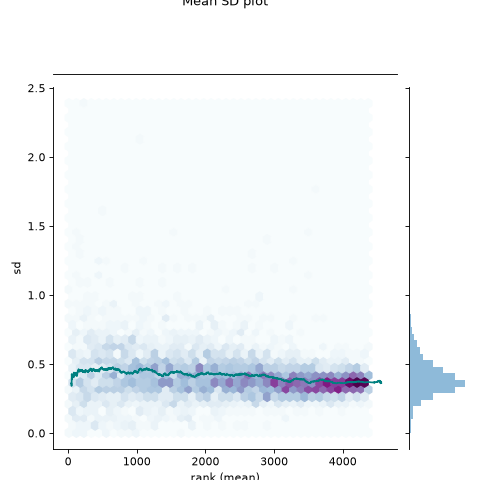
{kind=link}
{kind=link}
- autoprot.visualization.basic.plot_traces(df, cols: list, labels: list[str] = None, colors: list[str] = None, z_score: int = None, xlabel: str = '', ylabel: str = 'log_fc', title: str = '', ax: Axes = None, plot_summary: bool = False, plot_summary_only: bool = False, summary_color: str = 'red', summary_type: Literal['Mean', 'Median'] = 'Mean', summary_style: str = 'solid', **kwargs)[source]#
Plot numerical data such as fold changes vs. columns (e.g. conditions).
- Parameters:
df (pd.DataFame) – Input dataframe.
cols (list) – The colnames from which the values are plotted.
labels (list of str, optional) – Corresponds to data, used to label traces. The default is None.
colors (list of colours, optional) – Colours to labels the traces. Must be the same length as the values in cols. The default is None.
z_score (int, optional) – Whether to apply zscore transformation. Must be between 0 and 1 for True. The default is None.
xlabel (str, optional) – Label for the x-axis. The default is “”.
ylabel (str, optional) – Label for the y-axis. The default is “log_fc”.
title (str, optional) – Title of the plot. The default is “”.
ax (matplotlib axis, optional) – Axis to plot on. The default is None.
plot_summary (bool, optional) – Whether to plot a line corresponding to a summary of the traces as defined by summary_type. The default is False.
plot_summary_only (bool, optional) – Whether to plot only the summary. The default is False.
summary_color (Colour-like, optional) – The colour for the summary. The default is “red”.
summary_type (str, optional) – “Mean” or “Median”. The default is “Mean”.
summary_style (matplotlib.linestyle, optional) – Style for the summary trace as defined in https://matplotlib.org/stable/gallery/lines_bars_and_markers/linestyles.html. The default is “solid”.
**kwargs – passed to matplotlib.pyplot.plot.
- Return type:
None.
Examples
Plot the log fold-changes of 10 phosphosites during three comparisons.
phos = pp.read_csv("../data/Phospho (STY)Sites_minimal.zip") phos = pp.cleaning(phos, file = "Phospho (STY)") phosRatio = phos.filter(regex="^Ratio .\/.( | normalized )R.___").columns phos = pp.log(phos, phosRatio, base=2) phos = pp.filter_loc_prob(phos, thresh=.75) phosRatio = phos.filter(regex="log2_Ratio .\/.( | normalized )R.___").columns phos = pp.remove_non_quant(phos, phosRatio) phosRatio = phos.filter(regex="log2_Ratio .\/. normalized R.___").columns phos_expanded = pp.expand_site_table(phos, phosRatio) twitchVsmild = ['log2_Ratio H/M normalized R1','log2_Ratio M/L normalized R2','log2_Ratio H/M normalized R3', 'log2_Ratio H/L normalized R4','log2_Ratio H/M normalized R5','log2_Ratio M/L normalized R6'] twitchVsctrl = ["log2_Ratio H/L normalized R1","log2_Ratio H/M normalized R2","log2_Ratio H/L normalized R3", "log2_Ratio M/L normalized R4", "log2_Ratio H/L normalized R5","log2_Ratio H/M normalized R6"] mildVsctrl = ["log2_Ratio M/L normalized R1","log2_Ratio H/L normalized R2","log2_Ratio M/L normalized R3", "log2_Ratio H/M normalized R4","log2_Ratio M/L normalized R5","log2_Ratio H/L normalized R6"] phos = ana.ttest(df=phos_expanded, reps=twitchVsmild, cond="_TvM", return_fc=True) phos = ana.ttest(df=phos_expanded, reps=twitchVsctrl, cond="_TvC", return_fc=True) phos = ana.ttest(df=phos_expanded, reps=twitchVsmild, cond="_MvC", return_fc=True) idx = phos.sample(10).index test = phos.filter(regex="logFC_").loc[idx] label = phos.loc[idx, "Gene names"] vis.plot_traces(test, test.columns, labels=label, colors=["red", "green"]*5, xlabel='Column') plt.show()
(
Source code,png,hires.png,pdf)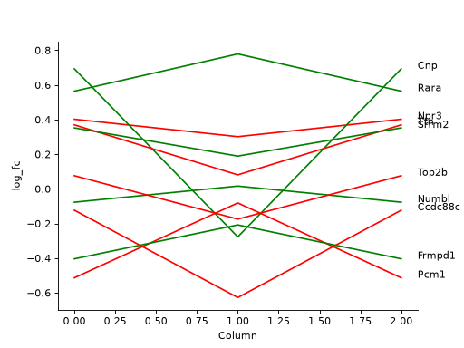
{kind=link}
{kind=link}
- autoprot.visualization.basic.prob_plot(df, col, dist='norm', figsize=(6, 6), ax=None)[source]#
Plot a QQ_plot of the provided column.
Data are compared against a theoretical distribution (default is normal)
- Parameters:
ax (plt.axis) – Axis to plot on, optional.
df (pd.DataFrame) – Input dataframe.
col (list of str) – Columns containing the data for analysis.
dist (str or stats.distributions instance, optional, optional) – Distribution or distribution function name. The default is ‘norm’ for a normal probability plot. Objects that look enough like a stats.distributions instance (i.e. they have a ppf method) are also accepted.
figsize (tuple of int, optional) – Size of the figure. The default is (6,6).
- Return type:
None.
Examples
Plot to check if the experimental data points follow the distribution function indicated by dist.
prot = pp.read_csv("../data/proteinGroups_minimal.zip") prot = pp.cleaning(prot, "proteinGroups") protInt = prot.filter(regex='Intensity').columns prot = pp.log(prot, protInt, base=10) vis.prob_plot(prot,'log10_Intensity H BC18_1') plt.show()
(
Source code,png,hires.png,pdf)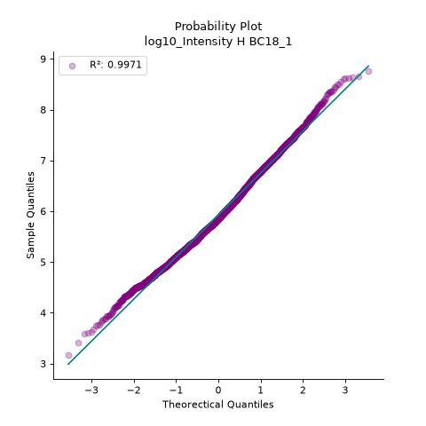
In contrast, when the data does not follow the distribution, outliers from the linear plot will be visible.
import scipy.stats as stats vis.prob_plot(prot,'log10_Intensity H BC18_1', dist=stats.uniform)
(
Source code,png,hires.png,pdf)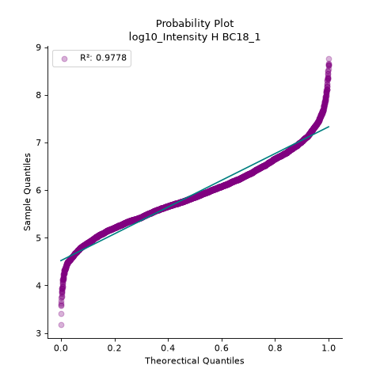
{kind=link}
{kind=link}
{kind=link}
{kind=link}
- autoprot.visualization.basic.pval_hist(df, ps, adj_ps, title=None, alpha=0.05, zoom=20)[source]#
Visualize Benjamini Hochberg p-value correction.
- Parameters:
df (pd.DataFrame) – Dataframe with p values.
ps (str) – Colname of column with p-values.
adj_ps (str) – column with adj_p values.
title (str, optional) – Plot title. The default is None.
alpha (flaot, optional) – The significance level drawn in the plot. The default is 0.05.
zoom (int, optional) – Zoom on the first n points. The default is 20.
- Return type:
None.
Examples
The function generates two plots, left with all datapoints sorted by p-value and right with a zoom on the first 6 values (zoom=7). The grey line indicates the provided alpha level. Values below it are considered significantly different.
phos = pp.read_csv("../data/Phospho (STY)Sites_minimal.zip") phos = pp.cleaning(phos, file = "Phospho (STY)") phosRatio = phos.filter(regex="^Ratio .\/.( | normalized )R.___").columns phos = pp.log(phos, phosRatio, base=2) phos = pp.filter_loc_prob(phos, thresh=.75) phosRatio = phos.filter(regex="log2_Ratio .\/.( | normalized )R.___").columns phos = pp.remove_non_quant(phos, phosRatio) phosRatio = phos.filter(regex="log2_Ratio .\/. normalized R.___").columns phos_expanded = pp.expand_site_table(phos, phosRatio) mildVsctrl = ["log2_Ratio M/L normalized R1","log2_Ratio H/L normalized R2","log2_Ratio M/L normalized R3", "log2_Ratio H/M normalized R4","log2_Ratio M/L normalized R5","log2_Ratio H/L normalized R6"] phos = ana.ttest(df=phos_expanded, reps=mildVsctrl, cond="_MvC", return_fc=True) vis.pval_hist(phos,'pValue_MvC', 'adj.pValue_MvC', alpha=0.05, zoom=7)
(
Source code,png,hires.png,pdf)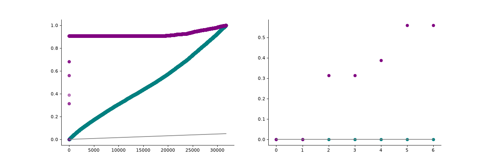
{kind=link}
{kind=link}
- autoprot.visualization.basic.ratio_plot(df: DataFrame, col_name1: str, col_name2: str = None, ratio_thresh: float | tuple[float | None, float | None] | None = None, xlabel: str = 'Ratio col1', ylabel: str = 'Ratio col2', pointsize_colname: str | float = None, pointsize_scaler: float = 1, highlight: list | Index | None = None, title: str = None, show_legend: bool = True, show_caption: bool = True, show_thresh: bool = True, ax: Axes = None, ret_fig: bool = True, figsize: tuple[float, float] = (8, 8), annotate: Index | Literal['highlight', 'ratio_thresh'] | None = 'ratio_thresh', annotate_colname: str = 'Gene names', kwargs_ns: dict = None, kwargs_r_sig: dict = None, kwargs_highlight: list | dict | None = None, annotate_density: int = 100)[source]#
Plot a ratio vs. ratio plot based on a pandas dataframe.
- Parameters:
df (pd.Dataframe) – The dataframe containing the data to be plotted.
col_name1 (str) – The name of the column in df to use for the x-values of the scatter plot.
col_name2 (str, optional) – The name of the column in df to use for the y-values of the scatter plot. The default is None.
ratio_thresh (float, optional) – The threshold for the ratio plot. The default is None.
xlabel (str, optional) – Label for the x-axis. The default is “Ratio col1”.
ylabel (str, optional) – Label for the y-axis. The default is “Ratio col2”.
pointsize_colname (str or float, optional) – The name of the column in df to use for the point sizes. The default is None.
pointsize_scaler (float, optional) – The scaling factor for the point sizes. The default is 1.
highlight (pd.Index or list of pd.Index, optional) – The indices of the points to highlight. The default is None.
title (str, optional) – The title of the plot. The default is None.
show_legend (bool, optional) – Whether to show the legend. The default is True.
show_caption (bool, optional) – Whether to show the caption. The default is True.
show_thresh (bool, optional) – Whether to show the threshold lines. The default is True.
ax (plt.Axes, optional) – The axis to plot on. The default is None.
ret_fig (bool, optional) – Whether to return the figure. The default is True.
figsize (tuple of int, optional) – The size of the figure. The default is (8, 8).
annotate ("highlight" or "ratio_thresh" or None or pd.Index, optional) – Whether to generate labels for the significant or highlighted points. Default is “ratio_thresh”.
annotate_colname (str, optional) – The column name to use for the annotation. The default is “Gene names”.
kwargs_ns (dict, optional) – Custom kwargs to pass to matplotlib.pyplot.scatter when generating the non-significant points.
kwargs_r_sig (dict, optional) – Custom kwargs to pass to matplotlib.pyplot.scatter when generating the significant points.
kwargs_highlight (dict or list of dict, optional) – Custom kwargs to pass to plt.scatter when generating the highlighted points.
annotate_density (int, optional) – The density (normalised to 1) below which points are ignored from labelling. The default is 100.
- Returns:
The figure object.
- Return type:
plotly.figure
Examples
Similar to the volcano plot function, the ratio plot takes a dataframe as input together with the two column names to plot.
prot = pp.read_csv("../data/proteinGroups_minimal.zip") prot = pp.cleaning(prot, "proteinGroups") protRatio = prot.filter(regex=r"^Ratio .\/.( | normalized )B").columns prot = pp.log(prot, protRatio, base=2) prot['Gene names 1st'] = prot['Gene names'].str.split(';').str[0] fig = vis.ratio_plot( prot, col_name1='Ratio M/L BC18_1', col_name2='Ratio M/L BC18_2', ratio_thresh= 3, annotate_colname='Gene names 1st', xlabel= 'Ratio Rep1', ylabel = 'Ratio Rep2', annotate_density=20) fig.show()
(
Source code,png,hires.png,pdf)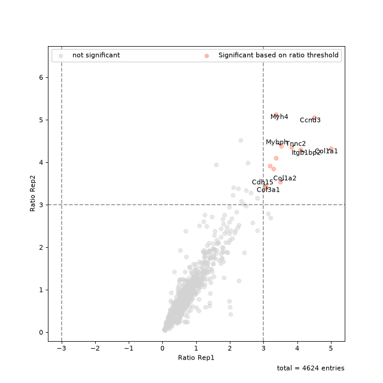
{kind=link}
{kind=link}
- autoprot.visualization.basic.venn_diagram(df: DataFrame, figsize: tuple = (10, 10), ret_fig: bool = False, proportional: bool = True)[source]#
Draw vennDiagrams.
The .venn_diagram() function allows to draw venn diagrams for 2 to 6 replicates. Even though you can compare 6 replicates in a venn diagram does not mean that you should. It becomes extremly messy.
The labels in the diagram can be read as follows: Comparing two conditions you will see the labels 10, 11 and 01. This can be read as: Only in replicate 1 (10), in both replicates (11) and only in replicate 2 (01). The same notation extends to all venn diagrams.
Notes
venn_diagram compares row containing not NaN between columns. Therefore, you have to pass columns containing NaN on rows where no common protein was found (e.g. after ratio calculation).
- Parameters:
df (pd.DataFrame) – Input dataframe.
figsize (tuple of int, optional) – Figure size. The default is (10,10).
ret_fig (bool, optional) – Whether to return the figure. The default is False.
proportional (bool, optional) – Whether to draw area-proportiona Venn diagrams. The default is True.
- Raises:
ValueError – If the number of provided columns is below 2 or greater than 6.
- Returns:
fig – The figure object. Only returned if ret_fig is True, else None.
- Return type:
matplotlib.figure
Examples
You can specify up to 6 columns containing values and NaNs. Only rows showing values in two columns will be grouped together in the Venn diagram.
prot = pp.read_csv("../data/proteinGroups_minimal.zip") prot = pp.cleaning(prot, "proteinGroups") protRatio = prot.filter(regex="Ratio .\/. BC.*").columns prot = pp.log(prot, protRatio, base=2) twitchVsmild = ['Ratio H/M BC18_1','Ratio M/L BC18_2','Ratio H/M BC18_3', 'Ratio H/L BC36_1','Ratio H/M BC36_2','Ratio M/L BC36_2'] data = prot[twitchVsmild[:3]] vis.venn_diagram(data, figsize=(5,5)) plt.show()
(
Source code,png,hires.png,pdf)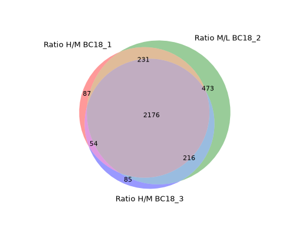
Only up to three conditions can be compared in non-proportional Venn diagrams
vis.venn_diagram(data, figsize=(5,5), proportional=False) plt.show()
(
Source code,png,hires.png,pdf)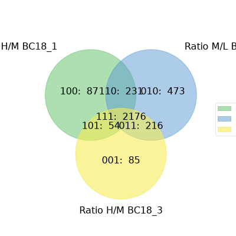
Copmaring up to 6 conditions is possible but the resulting Venn diagrams get quite messy.
data = prot[twitchVsmild[:6]] vis.venn_diagram(data, figsize=(20,20)) plt.show()
(
Source code,png,hires.png,pdf)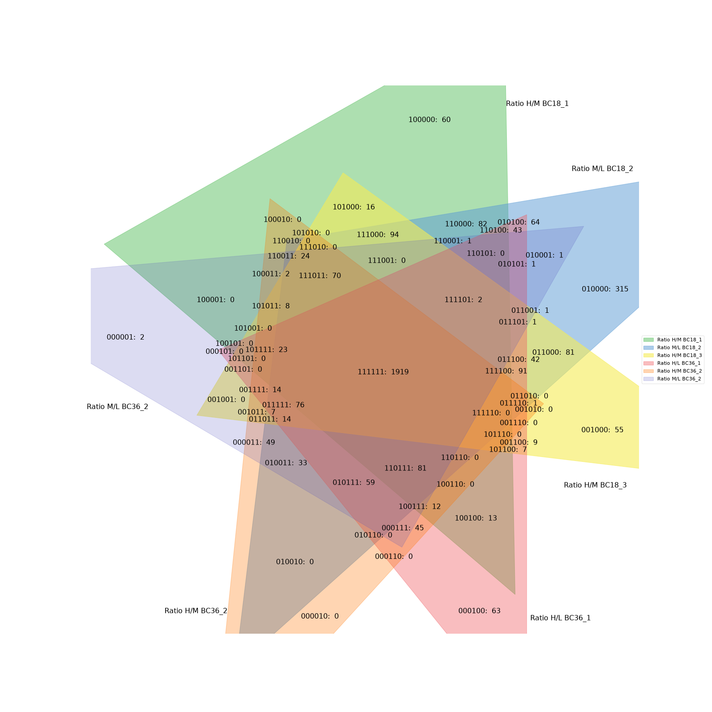
{kind=link}
{kind=link}
{kind=link}
{kind=link}
{kind=link}
{kind=link}
- autoprot.visualization.basic.volcano(df: DataFrame, log_fc_colname: str, p_colname: str = None, score_colname: str = None, p_thresh: float | None = 0.05, log_fc_thresh: float | None | tuple[float | None, float | None] = np.float64(1.0), pointsize_colname: str | float = None, pointsize_scaler: float = 1, highlight: Index | list[Index] | None = None, title: str = None, show_legend: bool = True, show_caption: bool = True, show_thresh: bool = True, ax: Axes = None, ret_fig: bool = True, figsize: tuple[float, float] = (8, 8), annotate: Index | Literal['highlight', 'p-value and log2FC', 'p-value or log2FC', 'p-value', 'log2FC'] | None = 'p-value and log2FC', annotate_colname: str = 'Gene names', kwargs_ns: dict = None, kwargs_p_sig: dict = None, kwargs_log_fc_sig: dict = None, kwargs_both_sig: dict = None, kwargs_highlight: dict | list[dict] | None = None, annotate_density: int = 100)[source]#
Return static volcano plot.
- Parameters:
df (pd.DataFrame) – Dataframe containing the data to plot.
log_fc_colname (str) – column of the dataframe with the log fold change.
p_colname (str, optional) – column of the dataframe containing p values (provide score_colname or p_colname). The default is None.
score_colname (str, optional) – column of the dataframe containing -log10(p values) (provide score or p). The default is None.
p_thresh (float or None, optional) – p-value threshold under which a entry is deemed significantly regulated. The default is 0.05.
log_fc_thresh (float or None, optional) – fold change threshold at which an entry is deemed significant regulated. The default is log2(2).
pointsize_colname (str or float, optional) – Name of a column to use as measure for point size. Alternatively the size of all points.
pointsize_scaler (float, optional) – Value to scale all point sizes. Default is 1.
highlight (pd.Index or list of pd.Index, optional) – Rows to highlight in the plot. The default is None.
title (str, optional) – Title for the plot. The default is None.
show_legend (bool, optional) – Whether to plot a legend. The default is True.
show_caption (bool, optional) – Whether to show the caption below the plot. The default is True.
show_thresh (bool, optional) – Whether to show the thresholds as dashed lines. The default is True.
ax (matplotlib.pyplot.axis, optional) – Axis to plot on
ret_fig (bool, optional) – Whether to return the figure, can be used to further customize it later. The default is False.
figsize (tuple, optional) – The size of the figure. Default is (8,8)
annotate ("highlight", "p-value and log2FC", "p-value", "log2FC", None or pd.Index, optional) – Whether to generate labels for the significant or highlighted points. Default is “p-value and log2FC”.
annotate_colname (str, optional) – The column name to use for the annotation. Default is “Gene names”.
annotate_density (int, optional) – The density (normalised to 1) below which points are ignored from labelling. Default is 100.
kwargs_ns (dict, optional) – Custom kwargs to pass to matplotlib.pyplot.scatter when generating the non-significant points. The default is None.
kwargs_p_sig (dict, optional) – Custom kwargs to pass to matplotlib.pyplot.scatter when generating the p-value significant points. The default is None.
kwargs_log_fc_sig (dict, optional) – Custom kwargs to pass to matplotlib.pyplot.scatter when generating the log2 fold-change significant points. The default is None.
kwargs_both_sig (dict, optional) – Custom kwargs to pass to matplotlib.pyplot.scatter when generating the overall significant points. The default is None.
kwargs_highlight (dict or list of dict, optional) – Custom kwargs to pass to plt.scatter when generating the highlighted points. Only relevant if highlight is not None. The default is None.
- Returns:
The figure object if ret_fig kwarg is True.
- Return type:
matplotlib.figure
Examples
The standard setting of volcano should be sufficient for getting a first glimpse on the data. Note that the point labels are automatically adjusted to prevent overlapping text.
prot = pp.read_csv("../data/proteinGroups_minimal.zip") prot = pp.cleaning(prot, "proteinGroups") protRatio = prot.filter(regex=r"^Ratio .\/.( | normalized )B").columns prot = pp.log(prot, protRatio, base=2) twitchVsmild = ['log2_Ratio H/M normalized BC18_1','log2_Ratio M/L normalized BC18_2', 'log2_Ratio H/M normalized BC18_3', 'log2_Ratio H/L normalized BC36_1','log2_Ratio H/M normalized BC36_2', 'log2_Ratio M/L normalized BC36_2'] prot_limma = ana.limma(prot, twitchVsmild, cond="_TvM") prot_limma['Gene names 1st'] = prot_limma['Gene names'].str.split(';').str[0] fig = vis.volcano( df=prot_limma, log_fc_colname="logFC_TvM", p_colname="P.Value_TvM", title="Volcano Plot", annotate_colname="Gene names 1st", ) fig.show()
(
Source code,png,hires.png,pdf)Thresholds can easily be modified using the log_fc_thresh and p_thresh kwargs:
fig = vis.volcano( df=prot_limma, log_fc_colname="logFC_TvM", p_colname="P.Value_TvM", p_thresh=0.01, title="Volcano Plot", annotate_colname="Gene names 1st", ) fig.show()
(
Source code,png,hires.png,pdf)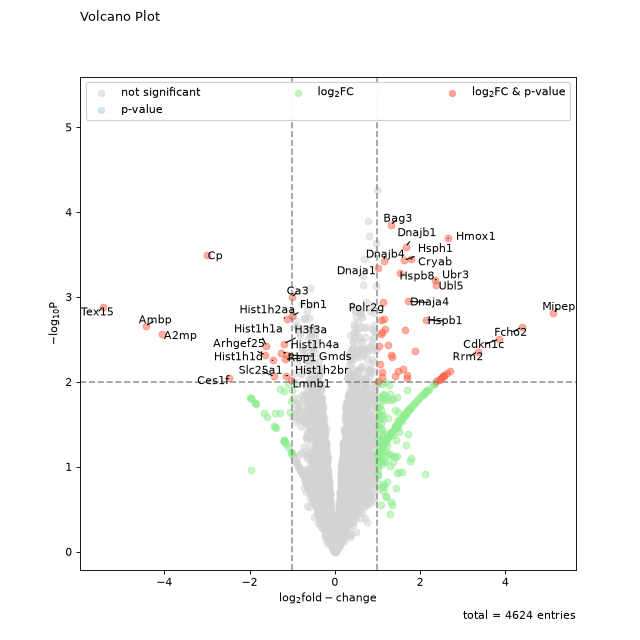
All points in the plot can be customized by supplying kwargs to the volcano function. These can be any arguments accepted by matplotlib.pyplot.scatter.
non_sig_kwargs = dict(color="black", marker="x") sig_kwargs = dict(color="red", marker=7, s=100) fig = vis.volcano( df=prot_limma, log_fc_colname="logFC_TvM", p_colname="P.Value_TvM", p_thresh=0.01, title="Customised Volcano Plot", annotate_colname="Gene names 1st", kwargs_ns=non_sig_kwargs, kwargs_p_sig=non_sig_kwargs, kwargs_log_fc_sig=non_sig_kwargs, kwargs_both_sig=sig_kwargs, ) fig.show()
(
Source code,png,hires.png,pdf)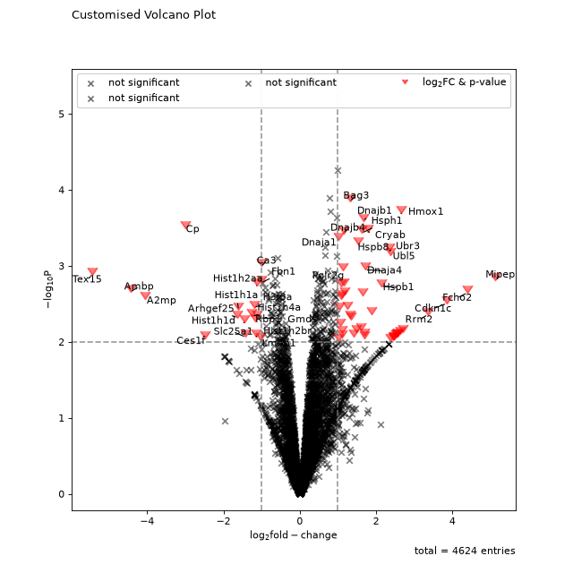
All other elements of the plot can be customised by accessing the figure and axis objects. The axis can be extracted from the figure returned by volano.
fig = vis.volcano( df=prot_limma, log_fc_colname="logFC_TvM", p_colname="P.Value_TvM", title="Volcano Plot", annotate_colname="Gene names 1st", ) ax = fig.gca() ax.axhline(y=3, color='red', linestyle=':') ax.axhline(y=4, color='blue', linestyle=':') fig.show()
(
Source code,png,hires.png,pdf)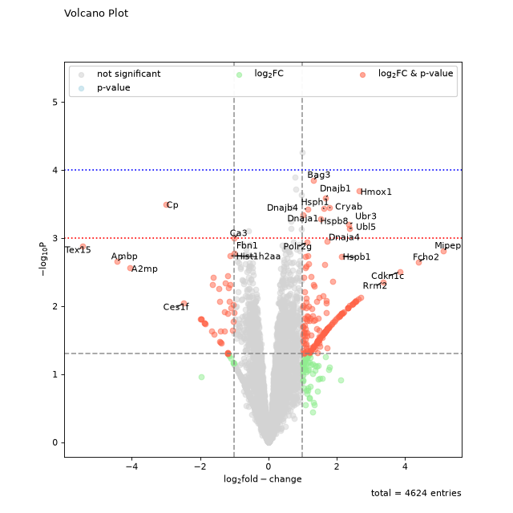
Volcano also allows you to supply a numeric column of your dataframe as agument to pointsize_colname. The numeric values will be noramlized between min and max and used for sizing the points. If the standard size is inconvenient, the point_scaler kwarg enables manual adjustemnt of the point sizes.
fig = vis.volcano( df=prot_limma, log_fc_colname="logFC_TvM", p_colname="P.Value_TvM", pointsize_colname='iBAQ', pointsize_scaler=5, title="Volcano Plot", annotate_colname="Gene names 1st", ) fig.show()
(
Source code,png,hires.png,pdf)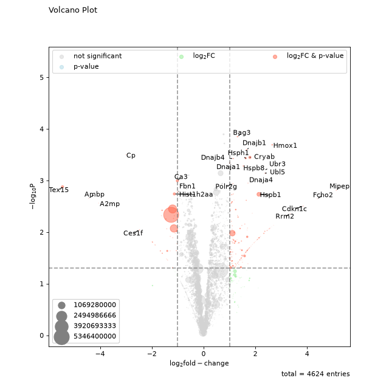
Custom points can also be highlighted by providing a pandas Index object of the corresponding rows as input to the highlight kwarg. Note that the annotated kwarg must be updated if you want to also label your highlighted points.
to_highlight = prot_limma[prot_limma['iBAQ'] > 10e8].index fig = vis.volcano( df=prot_limma, log_fc_colname="logFC_TvM", p_colname="P.Value_TvM", highlight=to_highlight, annotate='highlight', title="Volcano Plot", annotate_colname="Gene names 1st", ) fig.show()
(
Source code,png,hires.png,pdf)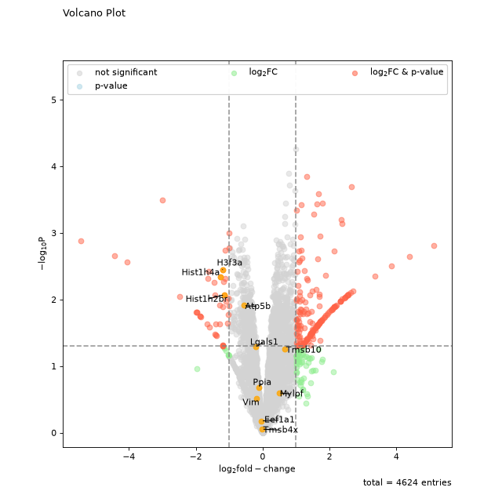
{kind=link}
{kind=link}
{kind=link}
{kind=link}
{kind=link}
{kind=link}
{kind=link}
{kind=link}
{kind=link}
{kind=link}
{kind=link}
{kind=link}